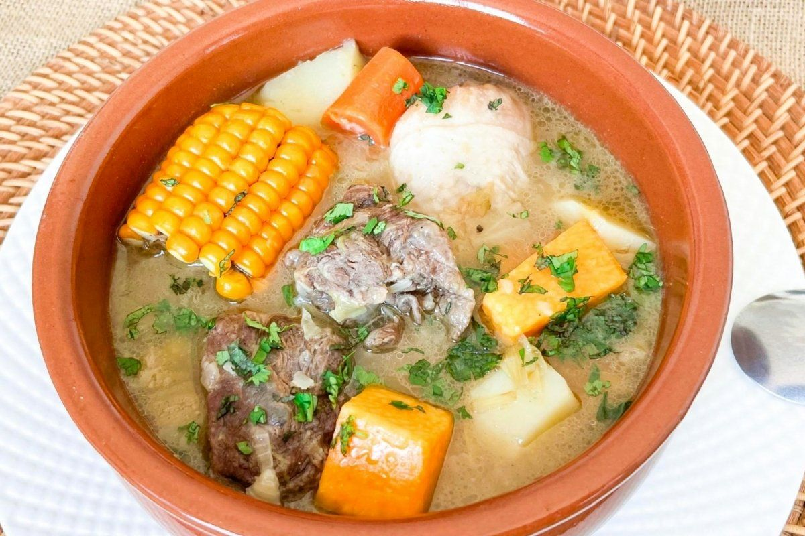

SANCOCHO
Utensilios
Olla grande
Cuchillo
Tabla de picar
Cucharón
Ingredientes
- 16 tazas Agua
- ½ libra Carne de cerdo o costilla
- ½ libra Carne gorda de res
- 150 g Yuca
- 2 Plátanos verdes
- 2 Plátanos guineos
- 1 Plátano maduro
- 6 libras Papas
- 75 g Arracacha
- 2 Zanahorias ralladas
- 4 hojas Repollo
- 2 Mazorcas
- 2 tallos Cebolla junca
- Perejil y cilantro
- 2 Cucharadas Aceite
- Sal, pimienta, azafrán, comino